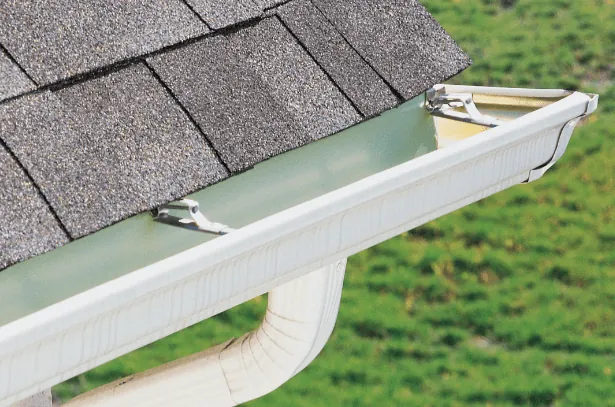

The longevity of your property is often tied to the health of your roof.
A key player in maintaining this health is the humble gutter system.
Yet, traditional gutters can fall short, leading to roof damage and other structural issues.
Enter innovative gutter solutions. These advanced systems offer more than just rainwater diversion. They bring improved efficiency, durability, and even aesthetic appeal.
In this guide, we delve into these innovative solutions, exploring their features, benefits, and the role they play in enhancing property longevity.
Whether you’re a homeowner, a property manager, or a roofing professional, this article will equip you with the knowledge to make informed decisions about gutter systems.
The Critical Role of Gutters in Property Protection
Gutters are more than just channels for rainwater. They serve a critical role in protecting your property.
By directing water away from your home, they prevent it from seeping into your foundation. This helps avoid costly repairs and structural issues.
Gutters also protect your roof and exterior walls from water damage. They prevent the formation of ice dams in winter, which can lead to roof leaks.
In essence, a well-functioning gutter system is your first line of defense against water-related property damage.
Common Gutter Problems and Their Consequences
Gutters can develop a range of problems over time. These issues can lead to serious consequences if not addressed promptly.
One common problem is water damage. This can occur when gutters are clogged or leaking, causing water to overflow onto your property.
Foundation issues are another major concern. When gutters fail to direct water away from your home, it can seep into your foundation, causing cracks and instability.
Lastly, landscaping erosion can occur when water is not properly diverted away from your property. This can lead to soil erosion and damage to your plants and lawn.
Advancements in Gutter Technology

The world of gutters has seen significant advancements in recent years. These innovations aim to address the common issues associated with traditional gutter systems.
New materials and designs have been introduced to improve durability and functionality. For instance, seamless gutters are now popular because of their reduced likelihood of leaks.
Moreover, the advent of gutter guards has revolutionized the way gutters function. These devices prevent debris from clogging the gutters, reducing the need for frequent cleaning.
Key Features of Innovative Gutter Solutions
Innovative gutter solutions come with many features designed to enhance their performance. One such feature is improved water flow. This is achieved through wider channels and smoother materials, reducing the chances of water pooling and causing damage.
Another key feature is debris filtering. Many modern gutter systems incorporate guards or screens that prevent leaves and other debris from entering the gutters. This significantly reduces the risk of blockages and overflows.
The seamless design of many innovative gutter solutions is another notable feature. Unlike traditional gutters, which are made up of multiple sections, seamless gutters are made from one continuous piece of material. This eliminates the joints that can often become weak points, leading to leaks.
These features combine to create a gutter system that is more efficient, reliable, and easier to maintain than traditional options.
The Importance of Gutter Guards and Maintenance
Gutter guards play a crucial role in maintaining the functionality of your gutter system. They prevent leaves, twigs, and other debris from clogging your gutters. This helps to ensure that water can flow freely, reducing the risk of overflow and water damage.
Regular maintenance is also vital for the longevity of your gutter system. This includes cleaning out any debris that may have accumulated and checking for any signs of damage or wear. Regular maintenance can help to identify and address any issues before they become major problems.
By investing in gutter guards and committing to regular maintenance, you can extend the lifespan of your gutter system and ensure it continues to protect your property effectively.
Eco-Friendly and Aesthetic Gutter Options
In the modern age, sustainability is a key concern for many homeowners. Eco-friendly gutter solutions are now available, made from recycled materials. These options not only reduce environmental impact but also offer durability and longevity.
Aesthetics is another important factor when choosing a gutter system. Today’s innovative gutter solutions come in a variety of styles and colors. This allows homeowners to choose a system that complements the exterior of their property.
In conclusion, innovative gutter solutions offer both eco-friendly and aesthetic options. These advancements allow homeowners to protect their property while also enhancing its curb appeal.
Smart Gutters: The Future of Roofing Protection
The future of roofing protection lies in smart gutters. These innovative gutter solutions are equipped with sensors. These sensors can detect blockages and other issues in real-time.
Smart gutters can even alert homeowners to potential problems. This allows for prompt action, preventing further damage. This technology is a game-changer in the roofing industry.
In essence, smart gutters offer a proactive approach to gutter maintenance. They help homeowners stay one step ahead of potential issues. This technology is set to revolutionize how we protect our homes from water damage.
Professional Installation vs. DIY: What You Need to Know
When it comes to gutter installation, professional service is often the best choice. A reputable roofing contractor has the skills and experience to ensure a flawless installation. They can also provide valuable advice on the best gutter solutions for your property.
On the other hand, DIY installation can be risky. Without the right tools and knowledge, you may end up with a poorly installed gutter system. This can lead to leaks, water damage, and other costly issues.
Moreover, professional installation often comes with warranties. These provide added peace of mind, knowing that any future issues will be addressed.
While DIY may seem cost-effective initially, professional installation ensures long-term performance and durability. It’s an investment that pays off in the long run.
The Long-Term Benefits of Investing in Quality Gutter Solutions
Investing in innovative gutter solutions is not just about immediate benefits. It’s also about the long-term advantages they offer. High-quality gutters can significantly enhance the lifespan of your property.
These advanced systems are designed to withstand harsh weather conditions. They effectively divert water away from your property, preventing potential damage. This reduces the need for frequent roof repairs, saving you money in the long run.
Innovative gutter solutions can also increase your property’s value. They add aesthetic appeal while ensuring optimal functionality. This can be a significant advantage if you plan to sell your property in the future.
In essence, investing in quality gutter solutions is a wise decision. It offers substantial returns in terms of property longevity, reduced maintenance costs, and increased property value.
Choosing the Right Gutter Solution for Your Roof
Choosing the right gutter solution is crucial for effective roof protection. It’s important to consider factors like your roof’s design, local climate, and the type of debris your property is exposed to.
Consulting with a reputable roofing contractor can help you make an informed decision. They can provide valuable insights and recommend the best gutter solutions tailored to your specific needs.
Conclusion: Protecting Your Investment with Innovative Gutter Solutions
Investing in innovative gutter solutions is a smart move for property longevity. It not only prevents roof damage but also enhances the overall value of your property.
Remember, the right gutter solution can save you from costly repairs in the future. So, make your decision wisely and protect your investment.
For expert residential roofing services such as gutter installation or maintenance, contact EZ Roofing for a free roof inspection! Our roofing company is more than happy to help get your gutter system back on track.